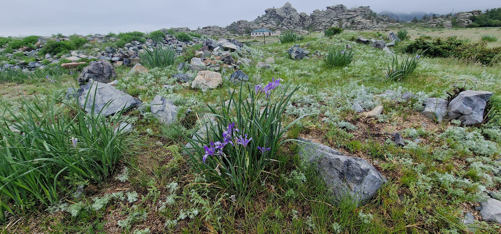

Transcultural Atelier – Maison du Regard is an independent research platform dedicated to the observation, analysis and interpretation of cultural heritage, material culture and historical landscapes in a transcultural perspective.
The Atelier brings together approaches from heritage studies, archaeology, history of material culture and visual analysis. Its work focuses on analytical dossiers, expert reflection, research-based interpretation and the development of open intellectual resources.
We believe that cultural heritage cannot be reduced to objects, monuments or datasets. It exists within layers of memory, interpretation and perception, and requires a careful, attentive approach.
Transcultural Atelier – Maison du Regard is grounded in the idea that observation precedes interpretation. We do not seek to produce fast conclusions or simplified narratives. Instead, we work through slow analysis, comparative perspectives and the reconstruction of meaning across cultural contexts.
Our work resists spectacle and superficial representation. It is based on clarity, precision and responsibility — towards the material, towards history and towards the communities connected to it.
We consider transculturality not as a fashionable term, but as a methodological necessity. Cultural heritage has never been isolated; it has always been formed through contact, exchange and transformation.
Maison du Regard is therefore not only a research platform, but also a space of intellectual discipline — where attention, knowledge and interpretation form the basis of understanding.

Transcultural Atelier – Maison du Regard est une plateforme de recherche indépendante consacrée à l’observation, à l’analyse et à l’interprétation du patrimoine culturel, de la culture matérielle et des paysages historiques dans une perspective transculturelle.
L’Atelier réunit des approches issues des études patrimoniales, de l’archéologie, de l’histoire de la culture matérielle et de l’analyse visuelle. Son activité porte sur des dossiers analytiques, la réflexion experte, l’interprétation fondée sur la recherche et le développement de ressources intellectuelles ouvertes.
Nous pensons que le patrimoine culturel ne peut être réduit à des objets, des monuments ou des ensembles de données. Il existe dans des strates de mémoire, d’interprétation et de perception, et nécessite une approche attentive et réfléchie.
Transcultural Atelier – Maison du Regard repose sur l’idée que l’observation précède l’interprétation. Nous ne cherchons pas à produire des conclusions rapides ni des récits simplifiés. Au contraire, notre travail s’inscrit dans une analyse lente, des perspectives comparatives et une reconstruction du sens à travers différents contextes culturels.
Notre approche s’oppose au spectaculaire et aux représentations superficielles. Elle est fondée sur la clarté, la précision et la responsabilité — envers le matériau, envers l’histoire et envers les communautés qui lui sont liées.
Nous considérons la transculturalité non comme un terme à la mode, mais comme une nécessité méthodologique. Le patrimoine culturel n’a jamais été isolé ; il s’est toujours construit à travers le contact, l’échange et la transformation.
Maison du Regard n’est donc pas seulement une plateforme de recherche, mais aussi un espace de discipline intellectuelle — où l’attention, la connaissance et l’interprétation constituent la base de la compréhension.